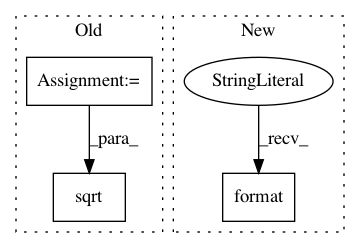

984791ffafd92b472624bc24056ddc7edd4012aa,geomstats/hyperbolic_space.py,HyperbolicMetric,exp_basis,#HyperbolicMetric#Any#Any#,170
Before Change
:param vector: vector
:returns riem_exp: a point on the hyperbolic space
sq_norm = self.embedding_metric.squared_norm(base_point)
real_norm = np.sqrt(np.abs(sq_norm))
base_point = base_point / real_norm
sq_norm_tangent_vec = self.embedding_metric.squared_norm(
tangent_vec)
After Change
+ SINH_TAYLOR_COEFFS[9] * sq_norm_tangent_vec ** 4)
else:
coef_1 = np.cosh(norm_tangent_vec)
print("coef_1 = {}".format(coef_1))
coef_2 = np.sinh(norm_tangent_vec) / norm_tangent_vec
riem_exp = coef_1 * base_point + coef_2 * tangent_vec
In pattern: SUPERPATTERN
Frequency: 3
Non-data size: 3
Instances
Project Name: geomstats/geomstats
Commit Name: 984791ffafd92b472624bc24056ddc7edd4012aa
Time: 2018-04-12
Author: ninamio78@gmail.com
File Name: geomstats/hyperbolic_space.py
Class Name: HyperbolicMetric
Method Name: exp_basis
Project Name: geomstats/geomstats
Commit Name: 88f01a67f6cc3c16bf20b7c892fcca9b9ab33937
Time: 2018-04-12
Author: ninamio78@gmail.com
File Name: geomstats/hyperbolic_space.py
Class Name: HyperbolicMetric
Method Name: exp_basis
Project Name: yzhao062/pyod
Commit Name: d084b1c9872b054db884f8846933d24d5516af1b
Time: 2018-12-10
Author: yuezhao@cs.toronto.edu
File Name: pyod/utils/stat_models.py
Class Name:
Method Name: pairwise_distances_no_broadcast